This assignment focuses on improving the website of Toronto Cupcake, a small business that, as the name suggests, is a cupcakery located in Toronto. The case study began on September 29, 2025, and ended on November 2, 2025.
The overall goal of this project was to redesign the Toronto Cupcake website to appropriately apply design principles and improve the user experience. These changes were intended to address seven design principles.
The entirety of this project was completed individually. As such, I was responsible for all aspects of the redesign (and the case study writeup). Many of the redesigns were completed using Adobe Photoshop; no other special software, including generative AI, was used.
In the process of completing this redesign, I learned many lessons about proper design that I had not previously considered until I saw them; I will keep this in mind for future design projects. Overall, this project has made me a better designer and has helped me hone my “soft skills.” I look forward to applying the lessons learned and the techniques practiced on future projects.
Visibility refers to the idea that it should be simple for the user to find what they are looking for, whether that is the next step in a process (e.g., after I have paid for my emissions test, the kiosk should clearly indicate how I'm supposed to open it up to plug the weird cable thing into my diagnostic port-not make me fiddle around until the kind soul behind me tells me I have to push the door in to get it to open out) or navigation to a different stage (e.g., if I’m looking for men’s shorts and I’m in the “men’s” section of Nautica’s website, the “shorts” link should be readily apparent).
While the process of adding cupcakes to one’s cart on the Toronto Cupcake website is generally straightforward, the steps that come after are significantly less so. Indeed, ambiguity in the buttons and commands makes it difficult for the user to know what they must do next to proceed with the ordering process. The following screen shot shows the “shopping cart” of a user who has added one or more items to their cart; the most logical option to proceed with the ordering process is to click the “Place Order” button (Design V-1)—but this does not actually place the order. (While the presence of a button reading “Place Order”—rather than, say, “Checkout”—on the shopping cart page differs from the practices of most e-commerce sites, this will be addressed in a later section; the focus here is on the ambiguity surrounding the next steps in the process, not on consistency with other websites.) How do I pay for the cupcakes? How do I tell them where to deliver the cupcakes? Did I miss something earlier? Am I doing this right? These are all questions that the existing design of the site could reasonably lead a user to ask.
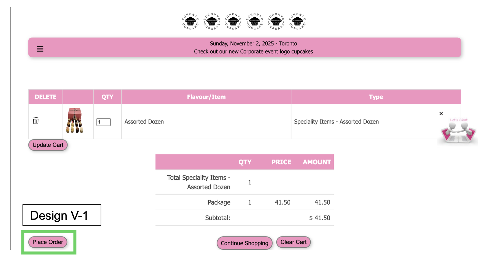Moreover, upon clicking “Place Order,” the user is taken to a page that asks them to enter the sender’s and recipient’s addresses and contact information; the page also asks users to check a box confirming that they understand the payment process—that they will receive a secure payment link after their order has been reviewed—and then click a button reading “Confirm Order” (Design V-2). The layout of this portion of the page also suggests that the user is affirming that they have read and understand the text contained on the “Confirm Order” page, although this is clearly not the intent.
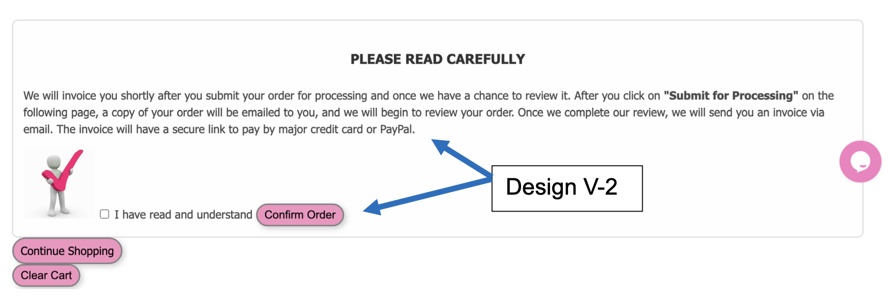To make things clearer for the user, the proposed redesign would change both the shopping cart page and the “Place Order” page. On the shopping cart page, the text of the “Place Order” button has been changed to “Checkout” (Design V-1A)—a minor change that nonetheless makes it clearer to the user how to proceed to the next step in the process. On the following page, “I have read and understand” has changed to “I have read and understand the above,” with the “Confirm Order” button moved below and to the right of the check box and the text in the section changed to reflect that this is the last step in the process (Design V-2A). (Note that this also involves eliminating one page, streamlining the process and ensuring a smoother experience for the user. In addition, as shown in Design V-2A, the total cost of the order is now displayed on this page, eliminating the need for the user to navigate back to their shopping cart to view this.)
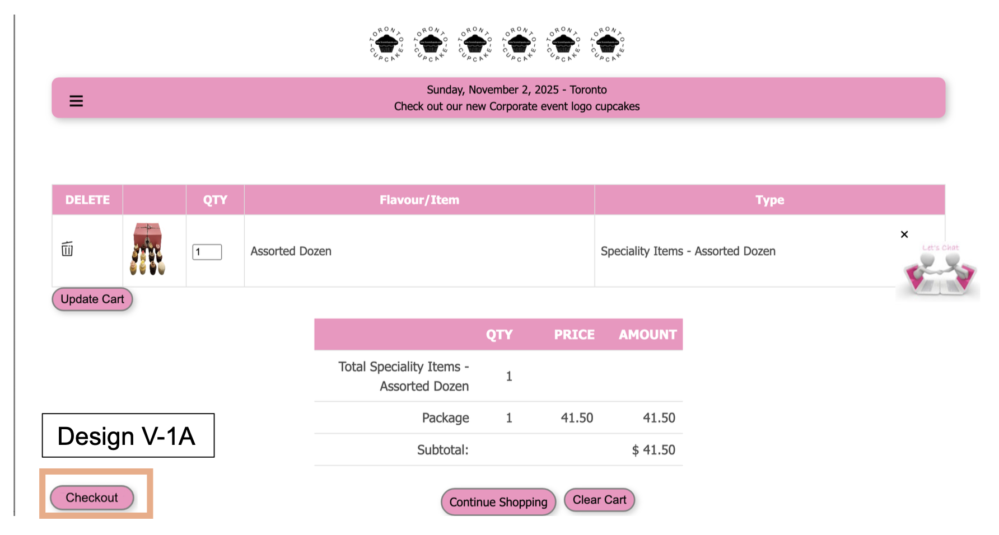Feedback refers to a site or application informing the user that yes, their action (a key press, a button click, etc.) was registered—whether through audible, visual, and/or haptic means—and keeping the user apprised of the current state of the system, such as the percentage of the task that has been completed (or even that it is still processing the task) or the currently assigned task (e.g., clear indications that a phone’s camera is open). For example, consider a microwave oven. The feedback it provides the user is beeping when I press a key—accompanied in most cases by a visual indication, such as a change in the display (a new number or “TT OFF” appearing, say) or a change in the brightness of the lights above the stove.
When a visitor to Toronto Cupcake’s website adds cupcakes to their shopping cart, the cart displays the total based on the specific category of the cupcake—that is, a “specialty” (such as Easter, Pride, or Canada Day) or “custom” (e.g., Happy Birthday) cupcake is displayed separately from the “standard” cupcakes. This in turn leads to an inaccurate count for the total number of cupcakes in the user’s cart. In the following screen shot, there are two cupcakes in the user’s cart (Design F-1), although the “Total Cupcakes” quantity is 1 (Design F-2).
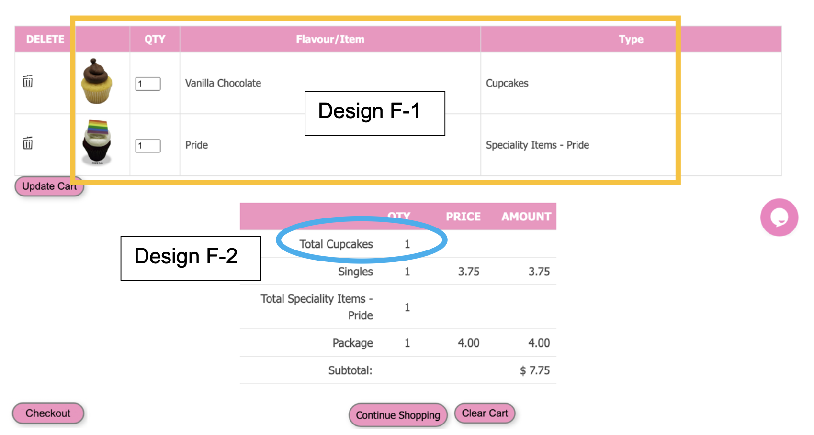This presents a problem for the user, who may be confused by the discrepancy (particularly if they have not scrolled down enough to see the entire table). If the user has added any “specialty” or “custom” cupcakes to their cart, it may not be evident that the website has registered these additions.
To address this issue and provide proper feedback for the user, a series of changes have been made. First, in the top table, the “Type” entry for the vanilla chocolate cupcake has been changed from “Cupcakes” to “Singles” (Design F-1A), matching the terminology used in the table that follows. In addition, the “Total Cupcakes” row of the bottom table now accurately displays the total number of cupcakes in the user’s cart; the third and fourth rows have also been consolidated to make the cost of each cupcake clear (Design F-2A). (The word “Total” has been removed from the “Specialty Items - Pride” row so that “Total Cupcakes” is the only row that includes the word “total.”)
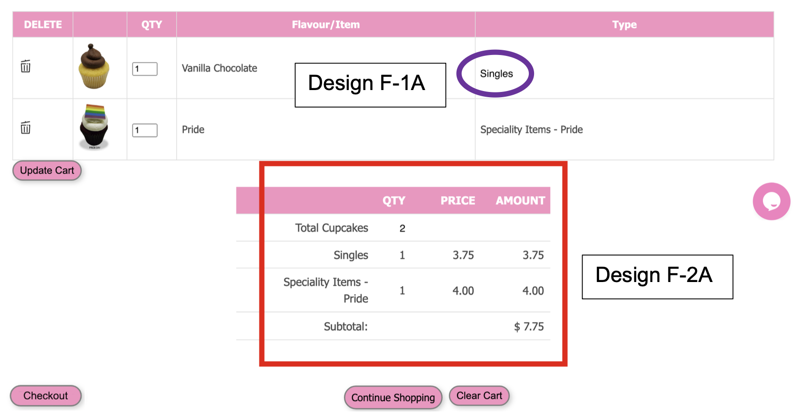These changes improve the user experience by ensuring that the user is provided with appropriate, accurate feedback, eliminating ambiguity and potential trouble spots for visitors to the website. The shopping cart page now displays a unified view of how many cupcakes the user has added; the discrepancy between the two tables has been resolved.
Broadly, a constraint on a website (or app) prevents the user from doing something they should not be able to do and/or that would cause a problem. In one instance, a constraint can restrict the information that can be entered and will not allow the user to proceed if a certain condition is violated or not met. For example, a constraint could prevent a user from registering a new account if the “password” and “confirm password” or “reenter password” fields do not match, or if the user’s entered email address lacks an @ sign or at least two characters after the dot. In the context of e-commerce, preventing the user from purchasing a sold-out item can also be considered a constraint, since, again, it stops the user from doing something they should not be able to do (placing an order the site knows it will be unable to fulfill).
When placing an order on the Toronto Cupcake website, the sender is able to select any country from a drop-down labeled “Select your country”; the recipient’s country is prefilled as “Canada” (Design CNT-1). Interestingly, however, the recipient’s “Country” field is an open text field, and the website allows users to enter other countries (Design CNT-2)— despite the fact that Toronto Cupcake repeatedly states on its website that it only delivers to the Greater Toronto Area.
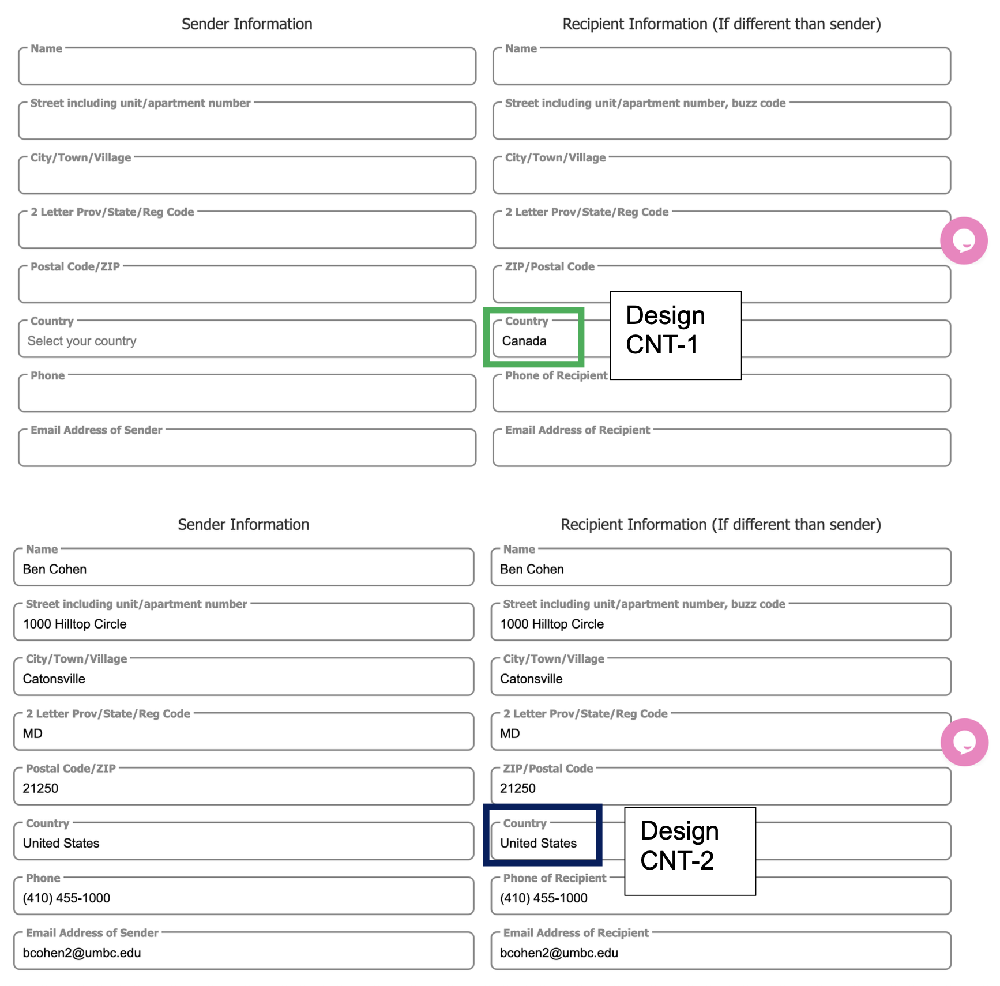To address this, the proposed redesign would remove the ability of the user to edit the “Country” field—and the “2 Letter Prov/State/Reg Code,” for that matter, since Toronto Cupcake only delivers to locations in Ontario; these entries are in gray rather than black to indicate that they cannot be adjusted (Design CNT-1A). Moreover, if the user enters a postal code that does not correspond to the Greater Toronto Area (i.e., that does not begin with “M”), the user will see a message informing them of this (Design CNT-2A). (In the following example, the postal code for McGill University in Montreal has been provided.)
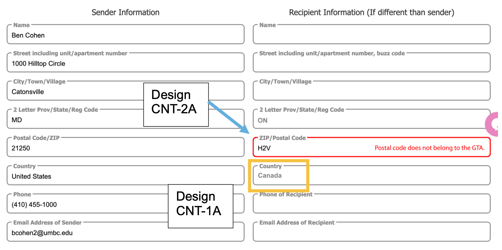This redesign is beneficial to both the consumer and the business. From the standpoint of the consumer, they are no longer able to place an order that will never be fulfilled; while this will undoubtedly disappoint some visitors, they would end up disappointed anyway—this just avoids giving them false hope. (It is unclear if consumers would be able to place an order to be delivered to a location outside the GTA; this was not attempted due to the potential credit-card charges involved.) For Toronto Cupcake, this prevents it from having to sort through any number of orders placed by customers outside the GTA—creating operational inefficiencies and potentially delaying valid orders—and deal with customers who are angry and/or confused about the cancellation of their order.
Consistency (specifically, internal consistency) refers to the idea that the user interface—both the operations (functional consistency) and the graphical elements (visual consistency)—should be the same or similar when performing the same task across multiple pages of a given website or app. For example, if one page of a specific website includes a hamburger menu in the top-left corner, the menu should remain in the same location (the top-left corner) on every page throughout that site.
When a user navigates to an empty shopping cart, the “Continue Shopping” button is located in the bottom-left portion of the “cart” (Design CST-1). However, when the user has added items to their cart, this button moves to the center of the “cart” (below the table showing the total quantity and cost of cupcakes), with the “Place Order” (now “Checkout”) button taking its place (Design CST-2). (Note that the second screen shot includes the previously described changes to the shopping cart page.)
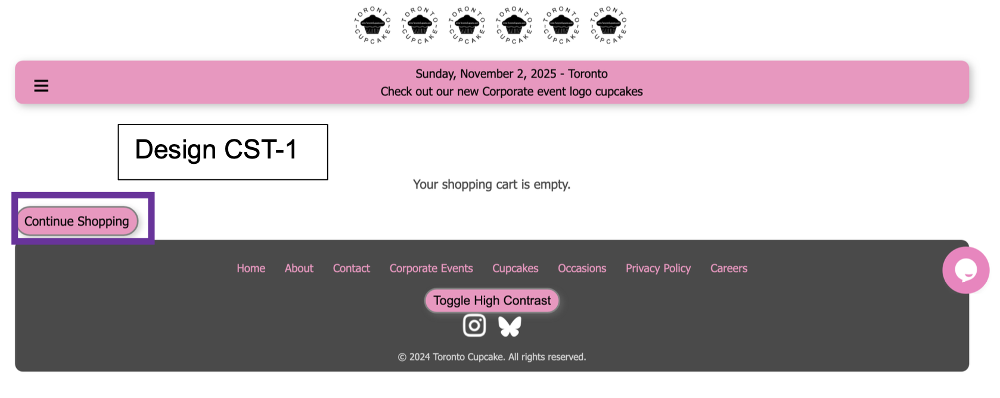This lack of internal consistency may cause difficulty for the user. In particular, the user may inadvertently click this button when attempting to check out—and the website does not offer a means to return to the shopping cart aside from purchasing another cupcake, creating unnecessary barriers and difficulty for the user. (While there is a “View Cart” link in the left-side hamburger menu, it does not, in fact, allow the user to view their shopping cart.)
The solution to this problem is simple: the “Continue Shopping” button remains in the bottom left regardless of how many items have been added to a user’s cart, and the “Place Order” (relabeled to “Checkout”) and “Clear Cart” buttons are now in the center when the user has added items to their cart (Design CST-1A). (In addition, “Clear Cart” is now on the left, with “Checkout” on the right; its position as the rightmost button is intentional given the general association with right as “next”—enhancing external consistency with other websites.)
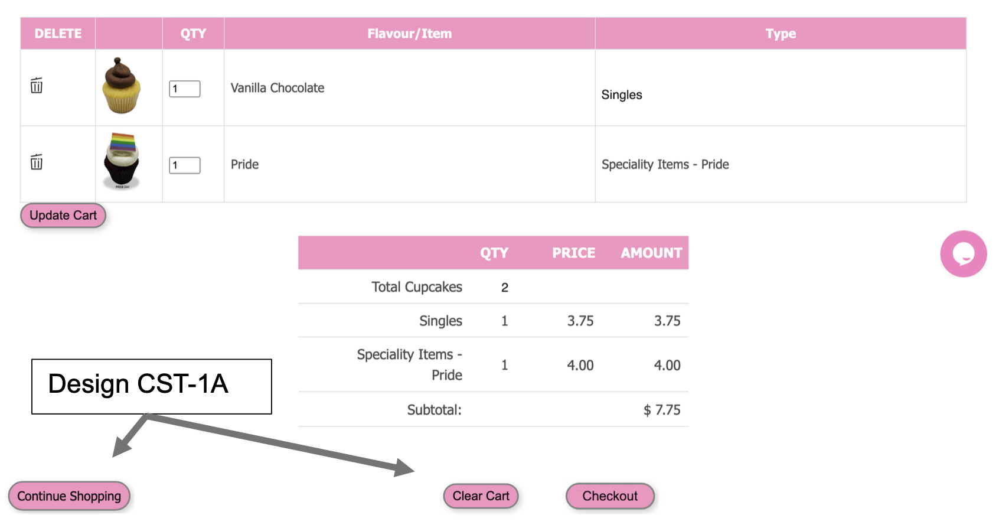In addition to enhancing internal and external consistency, this improves the user experience more generally by eliminating difficulties that may be faced by users attempting to place an order. When combined with the changes made previously to the shopping cart page and checkout process, it is anticipated that this will provide for a smoother, more streamlined experience for visitors to the website.
An affordance can best be thought of as the set of possible operations or behaviors, with a signifier referring to something (often a tangible physical object but sometimes—such as in the case of a website—a digital design element) that signals appropriate behavior to a user. As an example, consider a fancy glass door with handles on both sides. The door affords pushing and pulling while the handle is a signifier that, in theory, should indicate the door should be pulled. In practice, if the door is hinged, it can only move in one direction and thus must be either pulled or pushed depending on where the user is standing; this may necessitate the addition of a second signifier in the form of a sticker reading “PUSH” or “PULL.”
A false affordance refers to a design element that implies an affordance that is not actually available. For example, on the Web, underlined blue text has become synonymous with a hyperlink. Text like this that is not actually a hyperlink but is rather a conscious design choice can be considered a false affordance; it appears to signal to the user that it is a clickable link, but in fact the designer has simply changed the color and underlined the text. A similar concept is the hidden affordance, in which case there is nothing that signals to the user that interaction is possible. Consider, for example, a hidden door in a wall—the absence of a handle (and arguably also hinges) means the user has no idea that this wall segment affords opening and closing.
The Toronto Cupcake website features both false and hidden affordances. The top of the page includes repeated “Toronto Cupcake” logos, but these are not clickable (Design A-1). Clickable logos (that link to the homepage) at the top of any page have become so ubiquitous at this point that the presence of a logo that is not clickable can reasonably be considered a false affordance (in addition to a lack of external consistency). This may result in workflow interruptions to visitors to the webpage, who may try clicking several of the logos to confirm that none are clickable and will end up having to repeatedly click their browser’s “back” button to get back to the main page.
Shortly below this is a pink banner with black text that includes the current date and an exhortation to “Check out our new Corporate event logo cupcakes” (Design A-2). However, the text is no different from that above it; there is no indication that this text is clickable. It appears the standard indication of a clickable link on the website is pink text; while pink on pink would be very difficult to read, there are still ways to provide a clear indication that the text is clickable, as detailed in the following section. The lack of a clear indication that the text is clickable will most likely result in visitors to the website simply not clicking it, potentially resulting in the company missing out on orders from customers that would otherwise be interested.
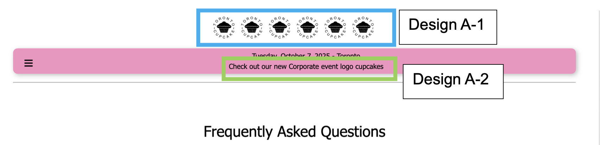The first part of the redesign consists of making the “Toronto Cupcake” logos at the top of the page into hyperlinks that return to the index page (Design A-1A). (While each logo is its own image file, the redesign includes making these a single file so that the white space between each logo also links to the homepage.) In resolving the false affordance, this allows for improved navigability and a more streamlined workflow compared to the existing design and ensures external consistency between this website and those of various other e-commerce businesses.
In addition, as part of the redesign, the “Check out...” text is now bold and underlined and is preceded by “click here to” (Design A-2A). This makes it apparent that the text is clickable (as opposed to the existing lack of such indications) and will presumably drive additional traffic to the “corporate events” page, resulting in increased sales for Toronto Cupcake. Particularly when the goal is to drive traffic to a page and drum up sales, the link should be as conspicuous as possible.
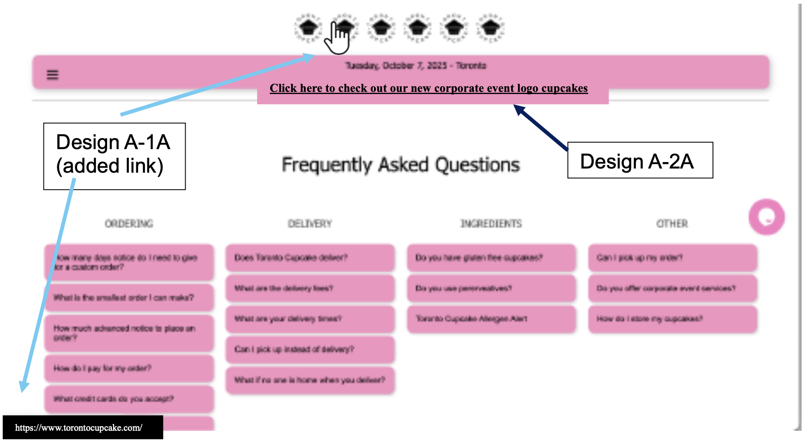A mapping informs the user of the change that should be expected when the user interacts with an object. For example, a good mapping may include the explainer “(opens in new tab)” next to a button that the user can click, ensuring the user will know that they will not lose their spot on the current page when clicking the button. On the other hand, a particular website that I frequent sometimes opens links in new tabs and sometimes opens them in the same tab, with seemingly no rhyme or reason as to which occurs when—and no indication as to which will occur upon clicking. (Alas, the ability to right-click and select “Open in new tab” is disabled.)
The “Contact Us” page of the Toronto Cupcake website includes a button with the text “Show planned location - Flagship Store” (Design M-1), but there is no indication as to how this planned location will be displayed (and as it is directly below a picture of the Toronto skyline, one may conclude that it would display as an overlay of the image). Upon clicking this, the button is replaced by an embedded Google Maps display (Design M-2), but there is no indication to the visitor that this will happen. In addition to the previously mentioned ambiguity, this presents a problem for mobile users: when the map appears, it is not visible in its entirety; the user must scroll down to view it (potentially scrolling the map in the process).
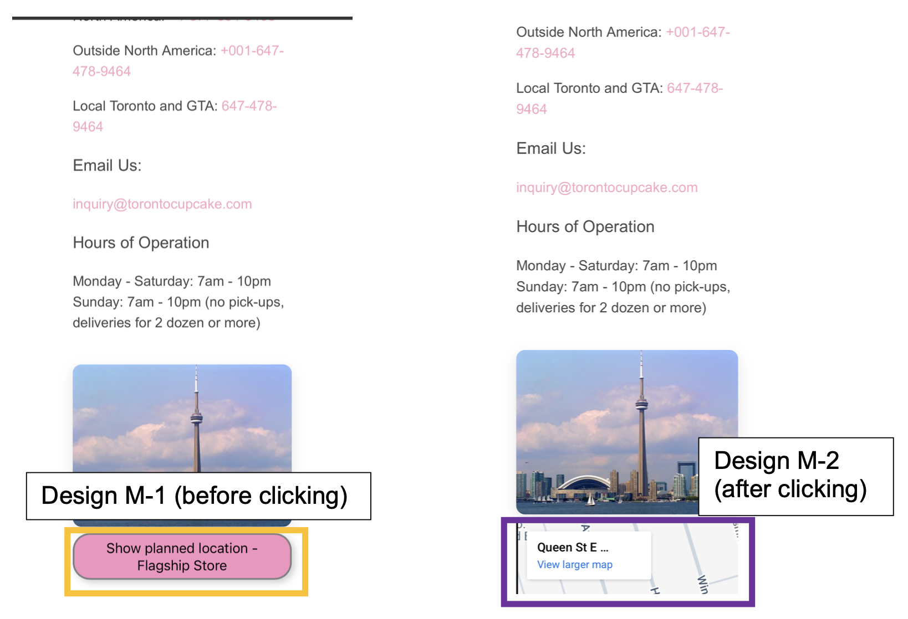The redesign includes changing the text in the map-generating button to explicitly state that it will open a Google Maps embed Design M-1A) and displaying the map in its entirety when it is opened (Design M-2A). While the concern about only being able to see a portion of the may may impact only mobile users, it is frankly likely that a majority of the website’s traffic will come from mobile devices rather than desktop and laptop computers. This design change thus greatly enhances the mobile experience by not putting users in a position to inadvertently scroll the map when they are trying to view it in its entirety, in addition to making the result of clicking the button clear before the user clicks it—a change that will benefit both desktop and mobile users.
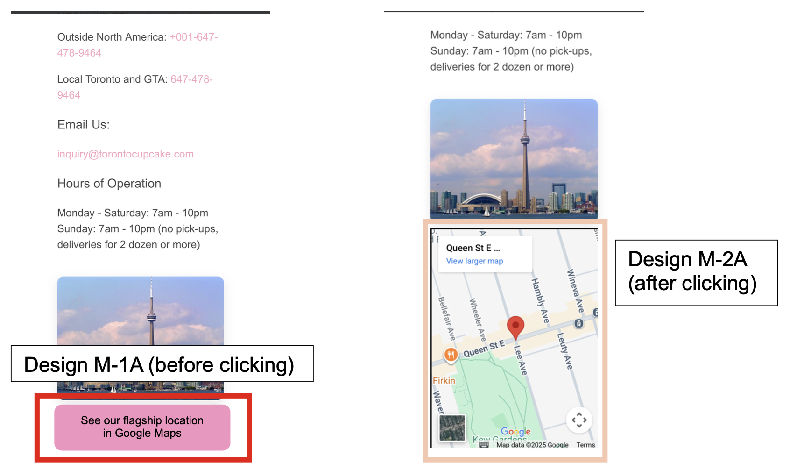